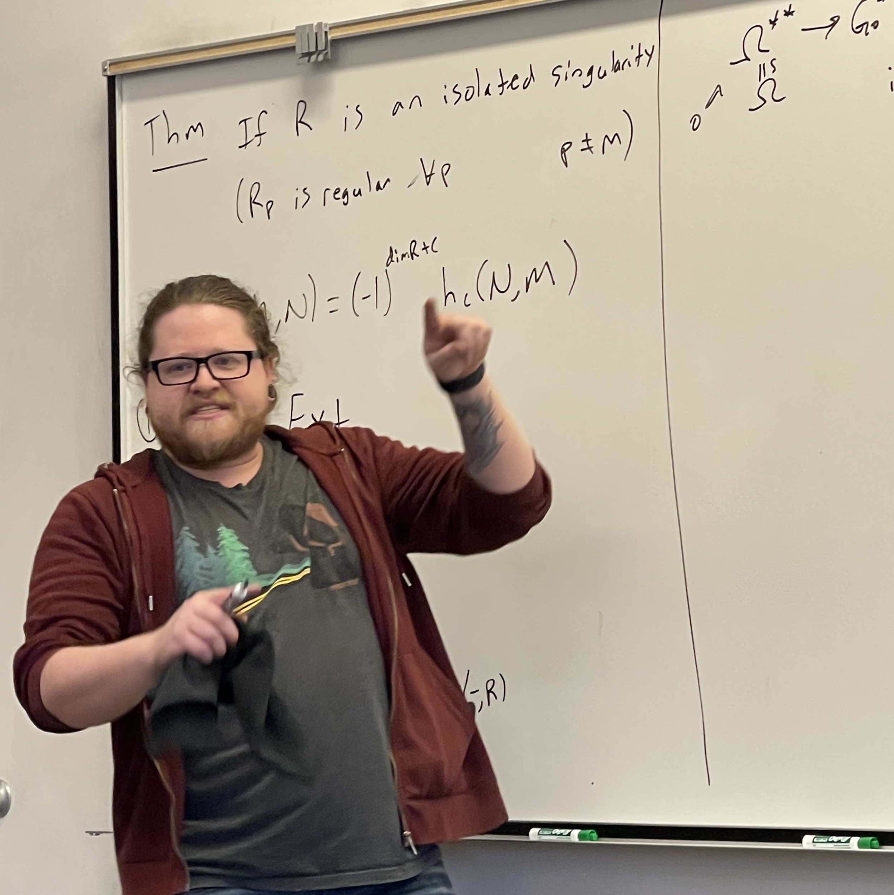

I care deeply about my role as an instructor in the classroom. I agree with the adage "mathematics is not a spectator sport"– so the main challenge in the classroom is figuring out how to foster genuine participation. I believe that in order for a student to participate they must first feel valued and respected. This is why my main goal while teaching is to develop an environment that is welcoming and collaborative. A space where students feel comfortable with exploaration is a space where learning happens best.
At Davidson College:
Spring 2025
-
MAT 230: Sets and Proofs
-
MAT 104: Introduction to Statistics
Fall 2024
-
MAT 150: Linear Algebra
-
MAT 104: Introduction to Statistics
Spring 2024
-
MAT 104: Introduction to Statistics
Fall 2023
-
MAT 104: Introduction to Statistics
At UNL:
-
Math 103: College Algebra and Trigonometry, Spring 2022, Spring 2021, Fall 2019
-
Math 106: Calculus I, Fall 2021
-
Math 104: Applied Calculus, Fall 2020, Spring 2020, Summer 2019
-
Math 107: Calculus II, Summer 2020
-
Math 203J: Contemporary Mathematics for Journalism majors, Spring 2019
-
Math 100A: Intermediate Algebra, Fall 2018
In these courses I focused on an active learning classroom structure. A usual class day comprised of students completing group work interspersed with short class discussions to introduce definitions or do examples. For many courses, worksheets had been developed by UNL to facilitate active learning, though these had not yet been developed for Math 203J, Math 107, or Math 104 (Summer 2019, Spring 2020). For those semesters I produced my own daily worksheets to guide group discussions and scaffold the course content.
Associate Convener
-
Math 106: Calculus I, Fall 2022, Spring 2023
For the Fall 2022 and Spring 2023 semester I have the opportunity to
oversee the Calculus I recitation instructors. I asked to take on this role
because I'm excited to provide mentorship to those new to
teaching. Most recitation instructors are first year graduate
students or undergraduates and so they have little to no
experience teaching. The associate convener is responsible for
running weekly meetings to discuss course logistics and provide
advice on how to introduce topics. The associate convener also does teaching observations for those new to
teaching. We then have a follow-up teaching conversation to discuss how the class is going.
Course Work
-
Math 996: Research on the Learning of Mathematics, Spring 2021
-
Math 896: Teaching and Learning Mathematics at the Post-Secondary Level, Fall 2018, Spring 2019
In Math 996 we explored various topics related to research and
theories on student learning accross grade levels and content
areas. Math 896 is a pedagogy course that all second year gratuate
students take at UNL. It is meant to be an introduction to
mathematics education.
Teaching Assistant
-
Math 106r: Calculus I recitation, Spring 2023, Fall 2022, Fall 2017
-
Math 107r: Calculus II recitation, Spring 2018, Summer 2018
As a recitation leader I facilitated group discussions among
students in order to help them deepen their understanding of the content.